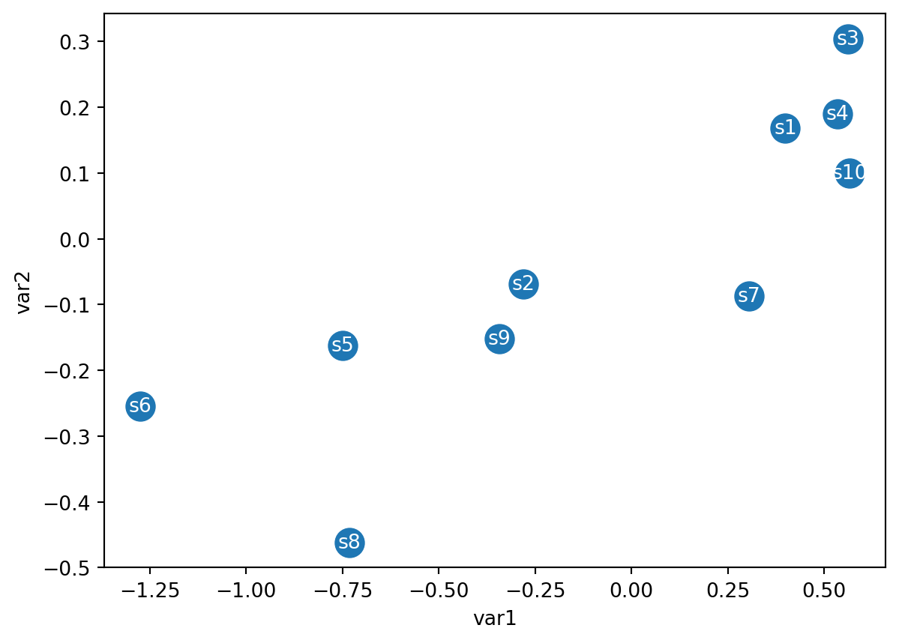

How PCA can take 3 or more dimensions of data and make a 2-D plot
How PCA can tell us which variable is the most valuable for clustering the data
How accurate the 2D graph is.
Generate toy data with only two variables
import numpy as npimport pandas as pdimport matplotlib.pyplot as pltns =10rng = np.random.default_rng(seed =24524526428)values1 = rng.normal(0,1,ns)#values1 = rng.normal(0, 1, ns)#values2 = values1*0.3+0+ rng.normal(0, 0.1, ns)values1, values2print(values2.std(), values1.std())df = pd.DataFrame(columns = [f"sample{i+1}"for i inrange(ns)], data = [values1, values2], index = ["var1", "var2"])df
0.22102932580425821 0.6317750283890801
sample1
sample2
sample3
sample4
sample5
sample6
sample7
sample8
sample9
sample10
var1
0.398996
-0.281577
0.561121
0.535099
-0.749120
-1.275561
0.304263
-0.732039
-0.342522
0.566333
var2
0.168485
-0.069093
0.304115
0.190153
-0.162314
-0.254016
-0.087240
-0.461732
-0.151510
0.100029
Visualize the data
#plt.scatter(df["var1",:], df["var2", :])plt.scatter(df.loc["var1"], df.loc["var2"], s=200)plt.xlabel(df.index[0])plt.ylabel(df.index[1])for i inrange(ns): plt.text(df.iloc[0,i], df.iloc[1,i], s =f"s{i+1}", va ="center", ha ="center", color ="white")

Step1: Calculate the mean of the two variables across all samples
#plt.scatter(df["var1",:], df["var2", :])fig, ax = plt.subplots()ax.scatter(dft.loc["var1"], dft.loc["var2"], s =200)ax.set_xlabel(dft.index[0])ax.set_ylabel(dft.index[1])for i inrange(ns): ax.text(dft.iloc[0,i], dft.iloc[1,i], s =f"s{i+1}", va ="center", ha ="center", color ="white")ax.plot(mean_var1, mean_var2, "ko", markersize =15)ax.spines['left'].set_position('zero')ax.spines['bottom'].set_position('zero')ax.spines['right'].set_visible(False)ax.spines['top'].set_visible(False)
Step3: Fit a line to the data that also passes through the origin
Draw a random line through the origin
Project each point on the line
Minimize the distance from each data to the line or maximize the distance from the projected point to the origin
Use ordinary least squares to find the lines that best fits the centered data.
Step 4: calculate the direction of the principal components
Step4: The fitted line is the PC1 axis and contains the direction of the eigenvector for PC1. The average value of the sum of squared distances of projection of each data point on PC1 represents the contribution of PC1 to total variance. This value is called eigenvalue for PC1. The coefficients of each variable in the PC1 eigenvector are called loadings and represent the contribution of each variable to PC1.
Eigen vector 1: [0.95885667 0.28389063]
Eigen vector 2: [ 0.28389063 -0.95885667]
Calculate eigen vectors for PC1 and PC2 using sklearn
Now calculate PC1 and PC2 using scikit-learn PCA module
from sklearn.decomposition import PCAfrom sklearn.preprocessing import StandardScalerscaler = StandardScaler()#df_scaled = scaler.fit_transform(df.transpose()) # We want to scale the data when variables are measured on different scales or have different units.pca = PCA(n_components=2)pca.fit(df.transpose())#pca.fit(df_scaled)pca.components_, pca.mean_, pca.explained_variance_ratio_, pca.n_samples_, pca.n_features_in_